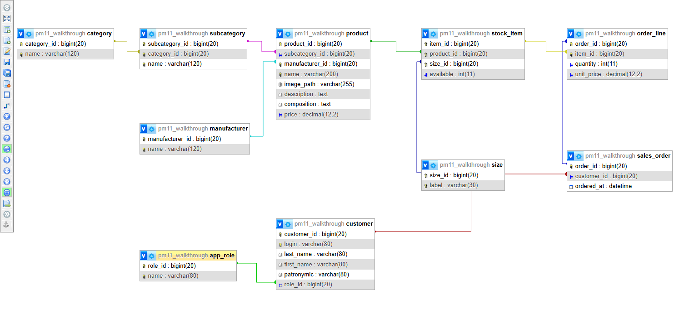
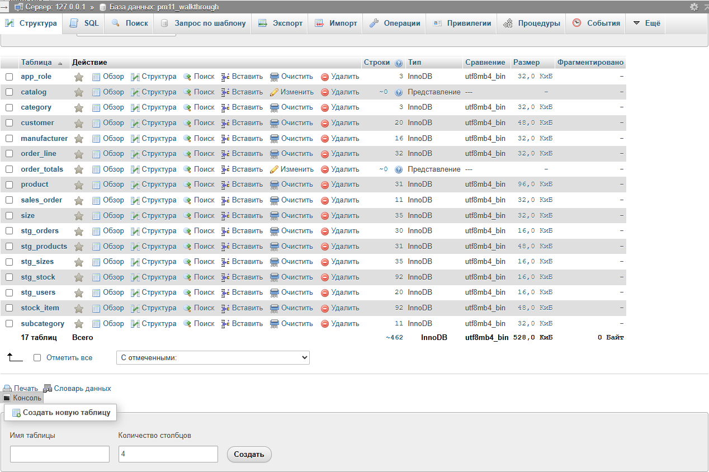
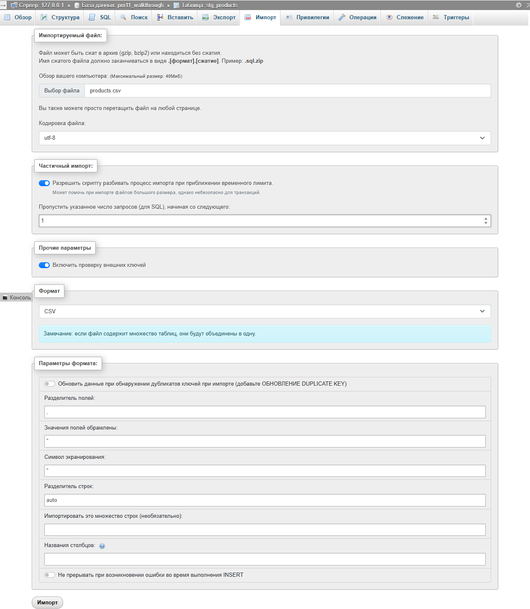
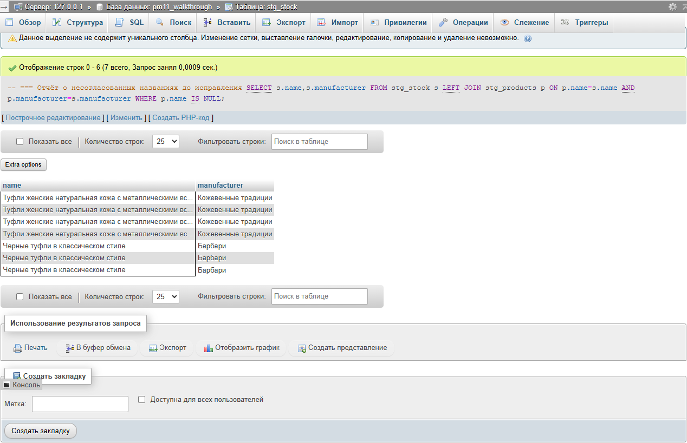
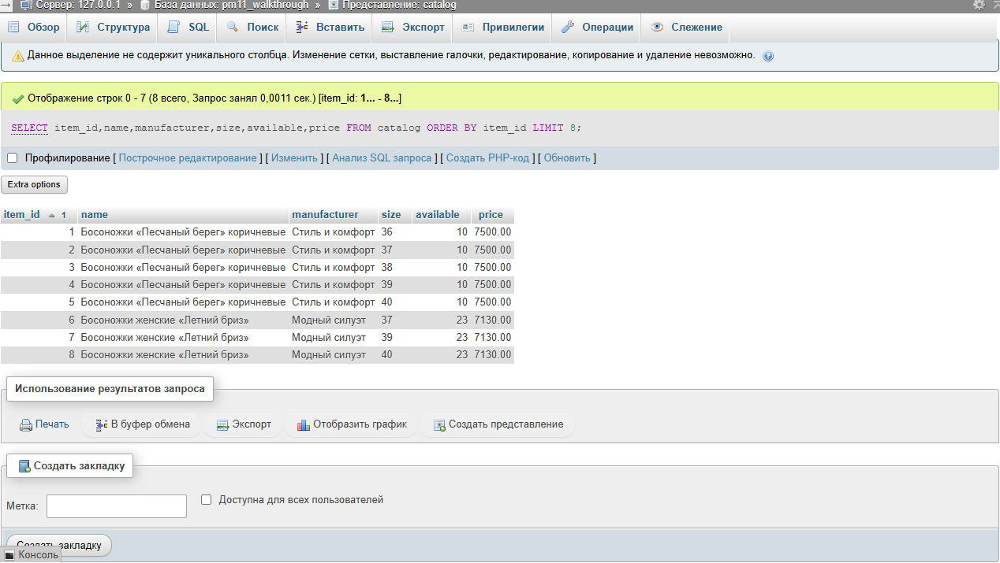
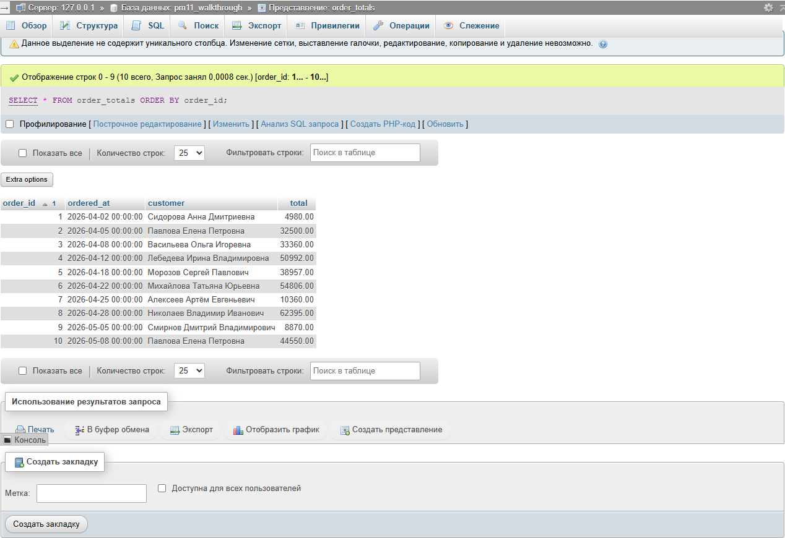
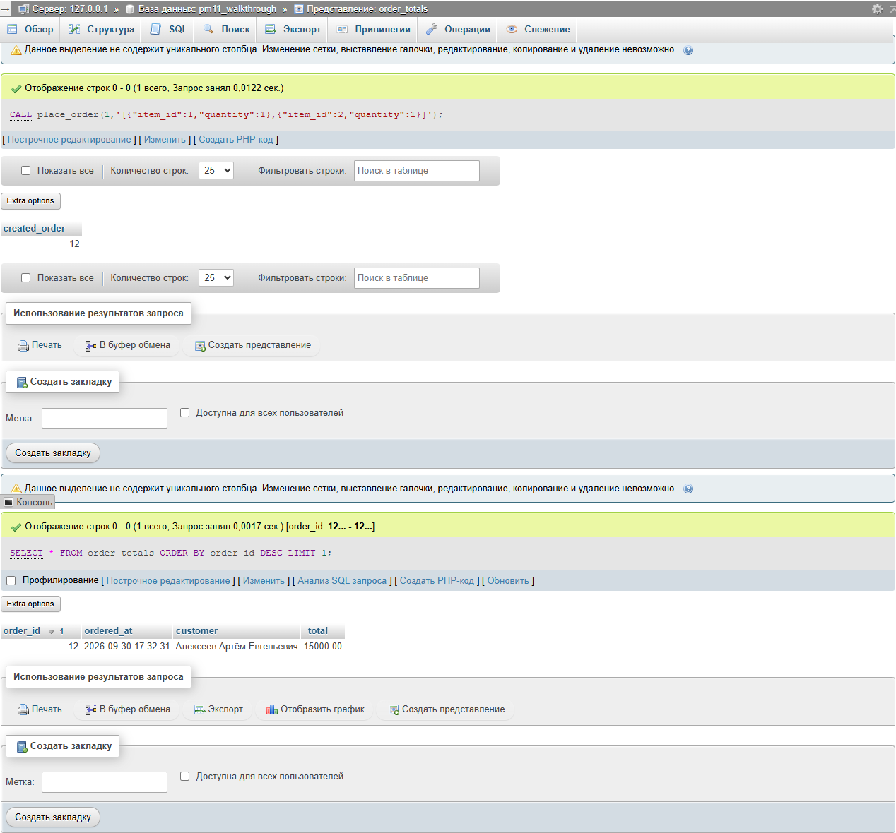
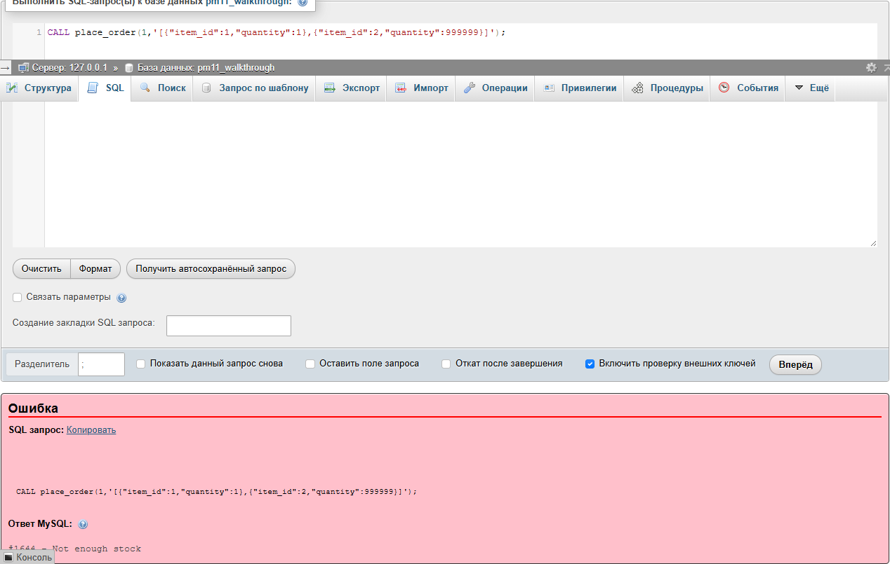

Магазин обуви «Пара»
Самостоятельный демонстрационный проект БД каталога и заказов с импортом данных ДЭ, проверкой целостности, транзакций, доступа и восстановления.
Учебный маршрут / 2026-2027
4 курс · 7 семестр · MySQL в XAMPP и phpMyAdmin
Учебный комплектСамостоятельный демонстрационный проект БД каталога и заказов с импортом данных ДЭ, проверкой целостности, транзакций, доступа и восстановления.
Скачать данные ДЭ для демонстрационного магазина обуви
Используйте при разборе импорта: пять CSV, изображения и контрольные значения. Данные своего варианта берите из его отдельного архива.
Для магазина обуви «Пара» каждая модель имеет производителя, подкатегорию, цену, состав, описание и ссылку на изображение. Размер сам по себе не определяет остаток: доступное количество относится к паре «модель + размер». Поэтому product и stock_item — разные таблицы. В category и subcategory хранится иерархия; product ссылается только на subcategory, чтобы категория не дублировалась и не могла противоречить ей.
Каждая строка описывает одну сущность, неключевые поля зависят от её ключа и не определяются другими неключевыми полями внутри той же таблицы. Производитель хранится в справочнике, а не повторяется текстом в каждом товаре. Заголовок sales_order описывает клиента и дату; order_line описывает конкретную позицию, количество и цену покупки. Вычисляемая сумма не хранится отдельно. unit_price является историческим фактом строки заказа и не должна обновляться вместе с product.price.
Скачать CSV и изображения демонстрации из данных ДЭ по прямой ссылке в начале этого раздела. Распакуйте архив; пять CSV находятся в data/demo. Они получены из пяти Excel-таблиц приложения 2 раздела БУ КИМ 09.02.07-2-2027. Изменены только заголовки и формат даты/чисел; расхождения названий сохраняются для разбора. Архив SOURCE.md объясняет происхождение. expected.json содержит проверенные количества исходных строк, а не готовые результаты вашей работы.
Скачать заготовку проекта БД для самостоятельной работы
Начните с описания проекта; SQL пишется по методичке. Индивидуальные данные скачайте отдельно.
Откройте XAMPP Control Panel. Нажмите Start в строках Apache и MySQL. При успешном запуске строка становится зелёной, появляются PID и порт. Не запускайте второй сервер на том же порту. Нажмите Admin в строке MySQL: откроется phpMyAdmin, обычно по адресу http://localhost/phpmyadmin/. Убедитесь на главной странице, что сервер доступен. Запишите фактические версии в отчёт. В проверенной среде XAMPP компонент MySQL использует MariaDB 10.4.32; это важно для синтаксиса ролей и процедуры.
Скачать заготовку рабочей папки проекта по прямой ссылке в начале этого раздела. Распакуйте её. В редакторе создавайте SQL-файлы с указанными ниже именами, сохраняйте в UTF-8. В phpMyAdmin нажмите Создать слева либо вкладку Базы данных. В поле имени введите pm11_demo, в списке сравнения выберите utf8mb4_bin, нажмите Создать. Имя должно быть свободно. Если оно уже занято вашей предыдущей демонстрацией, выберите другое собственное имя и замените его в настройках прав. Не удаляйте чужую БД.
Выделите свою БД слева, откройте вкладку SQL. Введите законченный фрагмент в редактор и нажмите Вперёд. Успех подтверждается сообщением phpMyAdmin и появлением объектов на вкладке Структура. Сохраните тот же текст в своём SQL-файле; не ограничивайтесь историей браузера. Если появилось сообщение ошибки, разберите имя объекта и строку; не продолжайте с отсутствующей таблицей. Команды CREATE TABLE в MySQL выполняют неявное завершение транзакции: обычный ROLLBACK не удалит созданную таблицу.
Первичный ключ однозначно обозначает строку. AUTO_INCREMENT создаёт новые номера. Внешний ключ указывает на существующую строку другой таблицы. Для товара и размера нужен дополнительный UNIQUE: новый item_id не делает повторную пару модель-размер допустимой. RESTRICT защищает справочник или позицию, на которую ссылаются данные. CASCADE для строк заказа описывает их зависимость от заголовка; автоматическое возвращение остатков при удалении заказа этим не выполняется. В данной работе роль оформления не имеет права удалять заказ.
После выполнения 01_schema.sql откройте вкладку Структура, затем Ещё → Дизайнер. В Дизайнере должны появиться таблицы; при необходимости выберите отображение всех таблиц и расположите справочники слева, каталог по центру, заказы справа. Связи InnoDB берутся из созданных внешних ключей, поэтому рисовать линии вместо SQL-ограничений недостаточно. Укажите на диаграмме ключи и кардинальность: один товар имеет много stock_item, один заказ имеет много order_line. На левой панели Дизайнера нажмите Экспорт схемы. В окне Экспорт схемы связей выберите PDF, альбомную ориентацию и размер A4 либо A3 для крупной схемы. Не включайте Показывать только ключи: нужны все атрибуты. Снимите Словарь данных, если нужен только рисунок, и нажмите Вперёд. Экспортируйте предметную схему до создания stg_таблиц и представлений: PDF-экспорт может включить их даже после скрытия на экране. Если они уже созданы, для диаграммы создайте отдельную БД только с 01_schema.sql. Перетаскивайте таблицы за название так, чтобы они не перекрывались. Проверьте читаемость всех таблиц и ключей перед сохранением.
Откройте product → Структура → Связи и убедитесь, что ссылки ведут на subcategory и manufacturer. Аналогично проверьте stock_item и order_line. Все таблицы должны иметь движок InnoDB. Сравните диаграмму с исходными сущностями; отсутствие user_password соответствует исходному описанию клиентов, а безопасность доступа к СУБД будет реализована отдельными учётными записями.
Создайте 01_schema.sql. Введите этот фрагмент первым и выполните во вкладке SQL выбранной БД. category обозначает крупную группу, subcategory — её вид; уникальность пары category_id/name разрешает одинаковое имя подкатегории в разных категориях. RESTRICT не даёт удалить категорию, пока на неё ссылается подкатегория. size хранит текстовый размер: в разных областях встречаются числовые размеры, S/M/L и универсальные маркировки. Проверьте четыре таблицы на вкладке Структура; в каждой есть первичный ключ.
-- === Справочники и третья нормальная форма CREATE TABLE category ( category_id BIGINT PRIMARY KEY AUTO_INCREMENT, name VARCHAR(120) NOT NULL UNIQUE CHECK (TRIM(name)<>'') ) ENGINE=InnoDB; CREATE TABLE subcategory ( subcategory_id BIGINT PRIMARY KEY AUTO_INCREMENT, category_id BIGINT NOT NULL, name VARCHAR(120) NOT NULL, UNIQUE(category_id,name), FOREIGN KEY(category_id) REFERENCES category(category_id) ON DELETE RESTRICT ) ENGINE=InnoDB; CREATE TABLE manufacturer ( manufacturer_id BIGINT PRIMARY KEY AUTO_INCREMENT, name VARCHAR(120) NOT NULL UNIQUE ) ENGINE=InnoDB; CREATE TABLE size ( size_id BIGINT PRIMARY KEY AUTO_INCREMENT, label VARCHAR(30) NOT NULL UNIQUE ) ENGINE=InnoDB;
Добавьте фрагмент в конец 01_schema.sql и выполните только новые CREATE TABLE. product хранит свойства модели, а stock_item — остаток по размеру. DECIMAL хранит денежные значения точно; FLOAT для цены не используется. Ограничение available>=0 действует независимо от клиента, UNIQUE(product_id,size_id) не позволяет повторную позицию. image_path — имя исходного изображения: файлы находятся в Images рядом с демонстрационными CSV; поле является ссылкой на файл, а не бинарным содержимым картинки. В структуре stock_item откройте Связи и проверьте оба внешних ключа.
-- === Товар и сочетание модели с размером CREATE TABLE product ( product_id BIGINT PRIMARY KEY AUTO_INCREMENT, subcategory_id BIGINT NOT NULL, manufacturer_id BIGINT NOT NULL, name VARCHAR(200) NOT NULL, image_path VARCHAR(255) NOT NULL DEFAULT '', description TEXT NOT NULL, composition TEXT NOT NULL, price DECIMAL(12,2) NOT NULL CHECK(price>0), UNIQUE(name,manufacturer_id), FOREIGN KEY(subcategory_id) REFERENCES subcategory(subcategory_id) ON DELETE RESTRICT, FOREIGN KEY(manufacturer_id) REFERENCES manufacturer(manufacturer_id) ON DELETE RESTRICT ) ENGINE=InnoDB; CREATE TABLE stock_item ( item_id BIGINT PRIMARY KEY AUTO_INCREMENT, product_id BIGINT NOT NULL, size_id BIGINT NOT NULL, available INT NOT NULL CHECK(available>=0), UNIQUE(product_id,size_id), FOREIGN KEY(product_id) REFERENCES product(product_id) ON DELETE RESTRICT, FOREIGN KEY(size_id) REFERENCES size(size_id) ON DELETE RESTRICT ) ENGINE=InnoDB;
Добавьте заключительный фрагмент в тот же файл и выполните. app_role описывает роли клиентов исходной предметной области; эти записи не дают прав подключения к серверу. sales_order содержит клиента и дату. order_line имеет составной первичный ключ: одна позиция присутствует в заказе один раз с суммарным количеством. unit_price фиксирует цену покупки. Откройте Структура и проверьте десять предметных таблиц. Затем постройте ER-диаграмму описанным выше способом.
-- === Клиент, заголовок заказа и исторические строки CREATE TABLE app_role ( role_id BIGINT PRIMARY KEY AUTO_INCREMENT, name VARCHAR(80) NOT NULL UNIQUE ) ENGINE=InnoDB; CREATE TABLE customer ( customer_id BIGINT PRIMARY KEY AUTO_INCREMENT, login VARCHAR(80) NOT NULL UNIQUE, last_name VARCHAR(80) NOT NULL, first_name VARCHAR(80) NOT NULL, patronymic VARCHAR(80) NOT NULL DEFAULT '', role_id BIGINT NOT NULL, FOREIGN KEY(role_id) REFERENCES app_role(role_id) ON DELETE RESTRICT ) ENGINE=InnoDB; CREATE TABLE sales_order ( order_id BIGINT PRIMARY KEY AUTO_INCREMENT, customer_id BIGINT NOT NULL, ordered_at DATETIME NOT NULL DEFAULT CURRENT_TIMESTAMP, FOREIGN KEY(customer_id) REFERENCES customer(customer_id) ON DELETE RESTRICT ) ENGINE=InnoDB; CREATE TABLE order_line ( order_id BIGINT NOT NULL, item_id BIGINT NOT NULL, quantity INT NOT NULL CHECK(quantity>0), unit_price DECIMAL(12,2) NOT NULL CHECK(unit_price>0), PRIMARY KEY(order_id,item_id), FOREIGN KEY(order_id) REFERENCES sales_order(order_id) ON DELETE CASCADE, FOREIGN KEY(item_id) REFERENCES stock_item(item_id) ON DELETE RESTRICT ) ENGINE=InnoDB;
Открыть ER-диаграмму демонстрационной БД для сверки
PDF экспортирован из реальной схемы в Дизайнере phpMyAdmin. Сверяйте после построения собственных таблиц; промежуточные stg_таблицы в предметную диаграмму не входят.


Создайте 02_staging.sql и добавьте фрагмент. Выполните создание пяти stg_таблиц до загрузки CSV. TEXT здесь выбран специально: промежуточный слой сохраняет исходное значение, даже когда оно ещё не соответствует строгому типу целевой таблицы. Это позволяет находить проблему до преобразования. После создания перейдите к инструкции импорта CSV ниже; запрос диагностики следующего фрагмента имеет смысл только после загрузки.
-- === Промежуточный слой исходных значений CREATE TABLE stg_products ( category TEXT,subcategory TEXT,image_path TEXT,name TEXT, manufacturer TEXT,description TEXT,composition TEXT,price TEXT ) ENGINE=InnoDB; CREATE TABLE stg_sizes (label TEXT) ENGINE=InnoDB; CREATE TABLE stg_stock ( name TEXT,manufacturer TEXT,size TEXT,available TEXT ) ENGINE=InnoDB; CREATE TABLE stg_users ( last_name TEXT,first_name TEXT,patronymic TEXT,login TEXT,role TEXT ) ENGINE=InnoDB; CREATE TABLE stg_orders ( order_id TEXT,ordered_at TEXT,full_name TEXT,category TEXT,name TEXT, manufacturer TEXT,size TEXT,quantity TEXT,unit_price TEXT ) ENGINE=InnoDB;
Скачать данные ДЭ для демонстрационного магазина обуви
Используйте при разборе импорта: пять CSV, изображения и контрольные значения. Данные своего варианта берите из его отдельного архива.
Скачать исходные CSV магазина обуви для импорта по прямой ссылке в начале этого раздела. Распакуйте; выберите data/demo/products.csv. Набор использует запятую, двойные кавычки, UTF-8 и заголовок в первой строке. Не открывайте и не сохраняйте CSV повторно в Excel перед импортом: разделитель и кодировка могут измениться. Содержимое можно проверить в текстовом редакторе.
Выберите таблицу stg_products слева, затем её вкладку Импорт. Нажмите Выберите файл и укажите products.csv. Выберите кодировку utf-8 и формат CSV. В параметрах формата разделитель полей задайте ,; ограничитель и символ экранирования — двойную кавычку ". В поле пропуска запросов/строк от начала укажите 1: английский заголовок не должен попасть в данные. Список колонок оставьте пустым: порядок совпадает с объявлением таблицы. Нажмите Импорт. Сообщение должно подтвердить импорт 31 строки. Если интерфейс использует опцию «Первая строка содержит имена столбцов», выберите её вместо пропуска; не применяйте оба способа одновременно.
Повторите ту же операцию: sizes.csv → stg_sizes (35 строк), stock.csv → stg_stock (92), users.csv → stg_users (20), orders.csv → stg_orders (30). Перед каждой загрузкой убедитесь в названии выделенной таблицы в верхней строке phpMyAdmin. SELECT COUNT(*) FROM stg_products; и аналогичные запросы проверяют результат. Повторная загрузка в заполненную промежуточную таблицу создаёт дубли: исправляйте только собственную stg_таблицу, очищая её перед повторным импортом. Дата в orders записана YYYY-MM-DD HH:MM:SS, десятичный разделитель цены — точка.

Вставьте запрос в конец 02_staging.sql, а выполните после импорта пяти CSV. LEFT JOIN оставляет строки остатков, даже когда подходящий товар не найден; WHERE p.name IS NULL выделяет именно такие строки. В исходной демонстрации ожидаются семь строк: четыре размера модели с неразрывным пробелом и три размера модели со сокращённым названием. Сохраните результат и сравните название и производителя с stg_products. Нельзя просто удалить эти строки или отключить внешние ключи: так потеряется доступный ассортимент.
-- === Отчёт о несогласованных названиях до исправления SELECT s.name,s.manufacturer FROM stg_stock s LEFT JOIN stg_products p ON p.name=s.name AND p.manufacturer=s.manufacturer WHERE p.name IS NULL;

Создайте 03_import.sql. Добавьте и выполните этот фрагмент во вкладке SQL. Первая команда заменяет байты C2 A0 — неразрывный пробел UTF-8 — обычным пробелом. Две следующие команды уточняют короткое название только для подтверждённого производителя Барбари. Основание — полное совпадение модели и производителя в исходном каталоге; это не правило автоматического объединения любых похожих названий. Повторите запрос из 02_staging.sql: он должен вернуть пустой результат. В индивидуальном наборе не добавляйте этих исправлений, если соответствующих расхождений нет.
-- === Исправление двух подтверждённых несогласованностей ДЭ UPDATE stg_products SET name=REPLACE(name,CONVERT(0xC2A0 USING utf8mb4),' '); UPDATE stg_stock SET name='Черные туфли в классическом стиле — база для деловых образов' WHERE name='Черные туфли в классическом стиле' AND manufacturer='Барбари'; UPDATE stg_orders SET name='Черные туфли в классическом стиле — база для деловых образов' WHERE name='Черные туфли в классическом стиле' AND manufacturer='Барбари';
Добавьте диагностические SELECT. Выполните их до вставки в целевые таблицы. Каждый результат должен быть пустым. Проверяются дубли товара, позиции, логина и строки заказа, однозначность клиента по ФИО, согласованность даты/клиента внутри номера заказа, наличие исходной позиции и корректность чисел. Если результат непустой, исправьте подтверждённую причину в stg_таблице и повторите запрос. ФИО не является постоянным ключом клиента: здесь оно используется только для сопоставления предоставленного файла; неоднозначность требует уточнения исходных данных, а не произвольного выбора первой строки.
-- === Поиск дублей и отсутствующих связей
SELECT name,manufacturer,COUNT(*) AS duplicates
FROM stg_products GROUP BY name,manufacturer HAVING COUNT(*)>1;
SELECT s.name,s.manufacturer,s.size FROM stg_stock s
LEFT JOIN stg_products p ON p.name=s.name AND p.manufacturer=s.manufacturer
LEFT JOIN stg_sizes z ON z.label=s.size
WHERE p.name IS NULL OR z.label IS NULL;
SELECT o.order_id,o.full_name FROM stg_orders o
WHERE (SELECT COUNT(*) FROM stg_users u WHERE
CONCAT_WS(' ',u.last_name,u.first_name,NULLIF(u.patronymic,''))=o.full_name)<>1;
SELECT order_id FROM stg_orders GROUP BY order_id
HAVING COUNT(DISTINCT ordered_at)>1 OR COUNT(DISTINCT full_name)>1;
SELECT o.order_id,o.name,o.size FROM stg_orders o
LEFT JOIN stg_stock s ON s.name=o.name AND s.manufacturer=o.manufacturer AND s.size=o.size
LEFT JOIN stg_products p ON p.name=o.name AND p.manufacturer=o.manufacturer AND p.category=o.category
WHERE s.name IS NULL OR p.name IS NULL;
SELECT name,manufacturer,size,COUNT(*) AS duplicates FROM stg_stock
GROUP BY name,manufacturer,size HAVING COUNT(*)>1;
SELECT login,COUNT(*) AS duplicates FROM stg_users GROUP BY login HAVING COUNT(*)>1;
SELECT order_id,name,manufacturer,size,COUNT(*) AS duplicates FROM stg_orders
GROUP BY order_id,name,manufacturer,size HAVING COUNT(*)>1;
SELECT name,price FROM stg_products
WHERE price IS NULL OR price NOT REGEXP '^[0-9]+([.][0-9]{1,2})?$' OR CAST(price AS DECIMAL(12,2))<=0;
SELECT name,available FROM stg_stock
WHERE available IS NULL OR available NOT REGEXP '^[0-9]+$';
SELECT order_id,quantity,unit_price FROM stg_orders
WHERE quantity IS NULL OR quantity NOT REGEXP '^[1-9][0-9]*$'
OR unit_price IS NULL OR unit_price NOT REGEXP '^[0-9]+([.][0-9]{1,2})?$'
OR CAST(unit_price AS DECIMAL(12,2))<=0;
-- Продолжайте только при пустых результатах диагностических запросов выше.Добавьте фрагмент от START TRANSACTION в файл; пока не выполняйте его отдельно. INSERT SELECT переносит строки по смысловым связям. DISTINCT формирует уникальные справочники. Категория и подкатегория связываются вместе, поэтому одинаковые названия видов в разных категориях не смешиваются. CAST превращает проверенную строковую цену в DECIMAL. Этот фрагмент и следующий должны быть отправлены одним SQL-запросом до COMMIT: отдельные запросы phpMyAdmin могут использовать разные соединения, и транзакция между вкладками не сохраняется.
-- === Справочники и товары внутри одной транзакции START TRANSACTION; INSERT INTO category(name) SELECT DISTINCT category FROM stg_products ORDER BY category; INSERT INTO subcategory(category_id,name) SELECT DISTINCT c.category_id,p.subcategory FROM stg_products p JOIN category c ON c.name=p.category ORDER BY c.category_id,p.subcategory; INSERT INTO manufacturer(name) SELECT DISTINCT manufacturer FROM stg_products ORDER BY manufacturer; INSERT INTO size(label) SELECT DISTINCT label FROM stg_sizes ORDER BY label; INSERT INTO app_role(name) SELECT DISTINCT role FROM stg_users ORDER BY role; INSERT INTO product(subcategory_id,manufacturer_id,name,image_path,description,composition,price) SELECT sc.subcategory_id,m.manufacturer_id,p.name,COALESCE(p.image_path,''), COALESCE(p.description,''),COALESCE(p.composition,''),CAST(p.price AS DECIMAL(12,2)) FROM stg_products p JOIN category c ON c.name=p.category JOIN subcategory sc ON sc.category_id=c.category_id AND sc.name=p.subcategory JOIN manufacturer m ON m.name=p.manufacturer ORDER BY p.name,p.manufacturer;
Добавьте заключительный фрагмент. Выберите целиком участок START TRANSACTION…COMMIT из готового файла и выполните его одной отправкой в SQL. Остатки передаются как уже актуальные значения; импорт исторических заказов повторно их не уменьшает. Историческая цена берётся из файла orders, а не из текущего каталога. При ошибке не выполняйте COMMIT; отправьте ROLLBACK и исправьте источник, затем повторите полный перенос на пустых целевых таблицах. После успеха проверьте счётчики и суммы ниже. Повторный импорт поверх заполненных таблиц не предусмотрен.
-- === Остатки, клиенты и исторические заказы
INSERT INTO stock_item(product_id,size_id,available)
SELECT p.product_id,z.size_id,CAST(s.available AS SIGNED)
FROM stg_stock s JOIN manufacturer m ON m.name=s.manufacturer
JOIN product p ON p.name=s.name AND p.manufacturer_id=m.manufacturer_id
JOIN size z ON z.label=s.size ORDER BY p.product_id,z.size_id;
INSERT INTO customer(login,last_name,first_name,patronymic,role_id)
SELECT u.login,u.last_name,u.first_name,COALESCE(u.patronymic,''),r.role_id
FROM stg_users u JOIN app_role r ON r.name=u.role ORDER BY u.login;
INSERT INTO sales_order(order_id,customer_id,ordered_at)
SELECT DISTINCT CAST(o.order_id AS UNSIGNED),c.customer_id,CAST(o.ordered_at AS DATETIME)
FROM stg_orders o JOIN customer c ON
CONCAT_WS(' ',c.last_name,c.first_name,NULLIF(c.patronymic,''))=o.full_name;
INSERT INTO order_line(order_id,item_id,quantity,unit_price)
SELECT CAST(o.order_id AS UNSIGNED),s.item_id,CAST(o.quantity AS SIGNED),
CAST(o.unit_price AS DECIMAL(12,2))
FROM stg_orders o JOIN manufacturer m ON m.name=o.manufacturer
JOIN product p ON p.name=o.name AND p.manufacturer_id=m.manufacturer_id
JOIN size z ON z.label=o.size
JOIN stock_item s ON s.product_id=p.product_id AND s.size_id=z.size_id;
COMMIT;В SQL выполните SELECT COUNT(*) FROM product; затем аналогичные запросы к size, stock_item, customer, sales_order и order_line. До новых заказов ожидаются 31, 35, 92, 20, 10 и 30 соответственно. SELECT SUM(available) FROM stock_item; должен дать 1274. После создания представления выполните SELECT SUM(total) FROM order_totals; — 341770.00. Контрольные значения получены из исходных файлов, поэтому подтверждают полноту переноса, а не только возможность SELECT.
Сообщение Duplicate entry обычно означает повторный импорт либо неоднозначный исходный ключ. Cannot add or update a child row указывает на отсутствующую связанную сущность: сначала найдите исходную строку и родительский ключ. Неверная кодировка проявляется испорченной кириллицей; проверьте UTF-8 файла и utf8mb4 БД. Не отключайте FOREIGN_KEY_CHECKS для обхода проблемы. Если JOIN вернул меньше строк, сравните исходные счётчики, дубли и названия, исправьте причину до продолжения.
Создайте 04_queries.sql, добавьте фрагмент и выполните. Представление catalog — сохранённый SELECT, который собирает удобные поля из нормализованных таблиц. Оно не хранит ещё одну копию данных. Каждая строка соответствует item_id, а не всей модели. Сравните размер и остаток с исходным CSV. При наличии товара нескольких размеров ожидается несколько строк с одним названием.
-- === Представление каталога CREATE VIEW catalog AS SELECT i.item_id,p.name,c.name AS category,sc.name AS subcategory, m.name AS manufacturer,z.label AS size,i.available,p.price,p.image_path FROM stock_item i JOIN product p USING(product_id) JOIN subcategory sc USING(subcategory_id) JOIN category c USING(category_id) JOIN manufacturer m USING(manufacturer_id) JOIN size z USING(size_id); SELECT * FROM catalog ORDER BY name,size;

Добавьте и выполните следующий фрагмент. order_totals считает quantity*unit_price, поэтому изменение текущей цены product не переписывает прошлый заказ. Группировка объединяет строки одного заказа; итог заказа зависит от его фактического состава. В демонстрации ожидаются десять исторических заказов. Проверьте один из них вручную по CSV: сумма произведений количества на цену должна совпасть.
-- === Итоги из исторической цены
CREATE VIEW order_totals AS
SELECT o.order_id,o.ordered_at,
CONCAT_WS(' ',c.last_name,c.first_name,NULLIF(c.patronymic,'')) AS customer,
CAST(SUM(l.quantity*l.unit_price) AS DECIMAL(14,2)) AS total
FROM sales_order o JOIN customer c USING(customer_id)
JOIN order_line l USING(order_id)
GROUP BY o.order_id,o.ordered_at,c.customer_id,c.last_name,c.first_name,c.patronymic;
SELECT * FROM order_totals ORDER BY order_id;
Добавьте фрагмент. Первый запрос позволяет объяснить итог через конкретные позиции, второй проверяет отсутствие потерянных заголовков и товарных позиций. broken_links должен быть 0. Этот контроль дополняет внешние ключи и помогает обнаружить ошибки при последующих изменениях.
-- === Состав заказа и контроль связей SELECT l.order_id,k.name,k.manufacturer,k.size,l.quantity,l.unit_price, l.quantity*l.unit_price AS line_total FROM order_line l JOIN catalog k USING(item_id) ORDER BY l.order_id,k.name; SELECT COUNT(*) AS broken_links FROM order_line l LEFT JOIN sales_order o USING(order_id) LEFT JOIN stock_item s USING(item_id) WHERE o.order_id IS NULL OR s.item_id IS NULL;
Добавьте CREATE INDEX и EXPLAIN. Индекс начинается с customer_id, потому что запрос отбирает историю одного клиента, затем использует ordered_at. Объясните columns key, possible_keys и rows в результатах EXPLAIN. На небольшом учебном наборе сервер может выбрать полный просмотр: это не ошибка и не доказательство бесполезности индекса. Не обещайте ускорение без измерения на большем наборе; обоснуйте соответствие индекса условию и порядку запроса.
-- === Индекс для истории клиента CREATE INDEX ix_order_customer_date ON sales_order(customer_id,ordered_at); EXPLAIN SELECT * FROM sales_order WHERE customer_id=1 ORDER BY ordered_at;
Создайте 05_order.sql и постепенно добавляйте все фрагменты этого файла. Промежуточные части не выполняются отдельно: после END и восстановления DELIMITER создайте процедуру целиком одной отправкой. В начале устанавливается строгий режим; он сохраняется вместе с процедурой и не меняет глобальную конфигурацию сервера. place_order принимает идентификатор клиента и JSON-массив пар item_id/quantity. Переменные хранят номер заказа и состояние цикла, курсор перебирает позиции по item_id. Обработчик ошибки выполняет ROLLBACK, убирает временную таблицу и повторно сообщает исходную ошибку через RESIGNAL.
-- === Объявление процедуры, курсора и обработчиков SET SESSION sql_mode='STRICT_TRANS_TABLES,ERROR_FOR_DIVISION_BY_ZERO,NO_ENGINE_SUBSTITUTION'; DELIMITER $$ CREATE PROCEDURE place_order(IN p_customer BIGINT,IN p_lines LONGTEXT) SQL SECURITY DEFINER BEGIN DECLARE v_order BIGINT; DECLARE v_item BIGINT; DECLARE v_quantity INT; DECLARE v_available INT; DECLARE v_price DECIMAL(12,2); DECLARE v_index INT DEFAULT 0; DECLARE v_count INT; DECLARE v_done INT DEFAULT 0; DECLARE v_id_text TEXT; DECLARE v_qty_text TEXT; DECLARE cur CURSOR FOR SELECT item_id,quantity FROM request_lines ORDER BY item_id; DECLARE CONTINUE HANDLER FOR NOT FOUND SET v_done=1; DECLARE EXIT HANDLER FOR SQLEXCEPTION BEGIN ROLLBACK; DROP TEMPORARY TABLE IF EXISTS request_lines; RESIGNAL; END;
Добавьте фрагмент в тот же BEGIN после объявлений. JSON_VALID отличает документ от произвольной строки. JSON_TYPE и JSON_LENGTH отвергают пустой заказ. Из каждого элемента извлекаются item_id и quantity; регулярное выражение разрешает только положительные целые. Временная request_lines принадлежит текущему соединению, поэтому две покупки не используют общую корзину. Повторяющиеся item_id объединяются с суммированием количества. Строгий режим не позволяет незаметно обрезать значение при переполнении INT.
-- === Подготовка и проверка списка заказа
IF p_lines IS NULL OR JSON_VALID(p_lines)=0 THEN
SIGNAL SQLSTATE '45000' SET MESSAGE_TEXT='Invalid JSON';
END IF;
IF JSON_TYPE(p_lines)<>'ARRAY' OR JSON_LENGTH(p_lines)=0 THEN
SIGNAL SQLSTATE '45000' SET MESSAGE_TEXT='Nonempty array required';
END IF;
DROP TEMPORARY TABLE IF EXISTS request_lines;
CREATE TEMPORARY TABLE request_lines (
item_id BIGINT PRIMARY KEY,quantity INT NOT NULL
) ENGINE=InnoDB;
SET v_count=JSON_LENGTH(p_lines);
WHILE v_index<v_count DO
SET v_id_text=JSON_UNQUOTE(JSON_EXTRACT(p_lines,CONCAT('$[',v_index,'].item_id')));
SET v_qty_text=JSON_UNQUOTE(JSON_EXTRACT(p_lines,CONCAT('$[',v_index,'].quantity')));
IF v_id_text IS NULL OR v_qty_text IS NULL
OR v_id_text NOT REGEXP '^[1-9][0-9]*$'
OR v_qty_text NOT REGEXP '^[1-9][0-9]*$' THEN
SIGNAL SQLSTATE '45000' SET MESSAGE_TEXT='Positive integer item and quantity required';
END IF;
INSERT INTO request_lines VALUES(CAST(v_id_text AS UNSIGNED),CAST(v_qty_text AS UNSIGNED))
ON DUPLICATE KEY UPDATE quantity=quantity+VALUES(quantity);
SET v_index=v_index+1;
END WHILE;Добавьте следующий фрагмент. Транзакция начинается перед записью заголовка. LAST_INSERT_ID относится к текущему соединению и возвращает именно его заказ. FOR UPDATE блокирует позицию до завершения операции; другой вызов ждёт и затем видит новый остаток. Позиции перебираются по возрастанию item_id, что уменьшает вероятность взаимных блокировок при заказах с несколькими товарами. Неизвестная позиция или недостаток товара вызывают SIGNAL и обработчик отката; ранее созданный заголовок и строки не остаются.
-- === Транзакция и блокировка товарных позиций START TRANSACTION; INSERT INTO sales_order(customer_id) VALUES(p_customer); SET v_order=LAST_INSERT_ID(); OPEN cur; read_loop: LOOP FETCH cur INTO v_item,v_quantity; IF v_done=1 THEN LEAVE read_loop; END IF; SET v_available=NULL; SELECT s.available,p.price INTO v_available,v_price FROM stock_item s JOIN product p USING(product_id) WHERE s.item_id=v_item FOR UPDATE; IF v_available IS NULL THEN SIGNAL SQLSTATE '45000' SET MESSAGE_TEXT='Unknown item'; END IF; IF v_available<v_quantity THEN SIGNAL SQLSTATE '45000' SET MESSAGE_TEXT='Not enough stock'; END IF;
Добавьте конец процедуры и DELIMITER ;. Теперь выполните весь 05_order.sql одной отправкой. quantity и текущая price записываются в order_line перед уменьшением остатка. Только после всех позиций выполняется COMMIT. Процедура сама управляет транзакцией; не вызывайте её из внешней незавершённой транзакции. В phpMyAdmin откройте Процедуры: должна появиться place_order. Для первой проверки выберите доступные item_id из catalog и выполните CALL, как в следующем файле. SQL SECURITY DEFINER даёт процедуре права создателя на её ограниченный код, но не выдаёт вызывающему прямые права UPDATE.
-- === Историческая цена, остаток и атомарное завершение INSERT INTO order_line(order_id,item_id,quantity,unit_price) VALUES(v_order,v_item,v_quantity,v_price); UPDATE stock_item SET available=available-v_quantity WHERE item_id=v_item; END LOOP; CLOSE cur; COMMIT; DROP TEMPORARY TABLE request_lines; SELECT v_order AS created_order; END$$ DELIMITER ;
Создайте 06_checks.sql, добавьте фрагмент и выполняйте запросы последовательно. До CALL зафиксируйте число заказов и остатки позиций 1/2. В демонстрационных исходных данных обе позиции доступны. После CALL появился один заказ и две строки, оба остатка уменьшились на единицу, сумма вычислена из сохранённых цен. Это реальные изменения: повторный запуск CALL создаст другой заказ. Для возврата к исходному набору используйте свою проверенную резервную копию в новой БД.
-- === Контроль до успешного оформления
SELECT COUNT(*) AS orders_before FROM sales_order;
SELECT item_id,available FROM stock_item WHERE item_id IN(1,2);
CALL place_order(1,'[{"item_id":1,"quantity":1},{"item_id":2,"quantity":1}]');
SELECT * FROM order_totals ORDER BY order_id DESC LIMIT 1;
SELECT item_id,available FROM stock_item WHERE item_id IN(1,2);
Добавьте фрагмент. Зафиксируйте число заказов и остатки непосредственно перед ошибочным CALL. Недостаток второй позиции должен вернуть Not enough stock; затем отдельно выполните два контрольных SELECT. Число заказов и оба остатка совпадают со значениями до вызова, включая первую уже обработанную позицию. Пропуск номера AUTO_INCREMENT после ошибки допустим: последовательность номеров не доказывает частично сохранённый заказ.
-- === Ошибка второй строки не сохраняет первую
CALL place_order(1,'[{"item_id":1,"quantity":1},{"item_id":2,"quantity":999999}]');
-- После ошибки отдельно выполните следующие запросы и сравните со снимком ДО вызова.
SELECT COUNT(*) AS orders_after_error FROM sales_order;
SELECT item_id,available FROM stock_item WHERE item_id IN(1,2);
Добавьте заключительный фрагмент. Каждый блок от START TRANSACTION до ROLLBACK проверяйте отдельно. Отрицательный остаток нарушает CHECK, неизвестный product_id — внешний ключ, повторный логин — UNIQUE. После сообщения ошибки явно выполните ROLLBACK отдельным запросом. Убедитесь, что данные сохранились. Ограничения защищают БД и тогда, когда ошибку допускает клиент или администратор.
-- === Ограничения: каждый блок выполняется отдельно START TRANSACTION; UPDATE stock_item SET available=-1 WHERE item_id=1; ROLLBACK; START TRANSACTION; INSERT INTO stock_item(product_id,size_id,available) VALUES(999999,1,1); ROLLBACK; START TRANSACTION; INSERT INTO customer(login,last_name,first_name,role_id) SELECT login,last_name,first_name,role_id FROM customer LIMIT 1; ROLLBACK;
Создайте 07_roles.sql. Выполняйте как администратор, после создания процедуры. Групповые роли MariaDB не являются паролями или записями app_role. Читателю разрешены два представления, оформлению добавляется только EXECUTE процедуры. Остаток напрямую менять нельзя; клиент выбирает существующего клиента по договорённости учебного сценария. Перед выполнением GRANT замените pm11_demo на имя своей БД. CREATE ROLE выполняется один раз на сервере; если роль уже ваша и создана ранее, выполните только соответствующие GRANT.
-- === Групповые роли MariaDB для учебной БД pm11_demo CREATE ROLE pm11_reader; CREATE ROLE pm11_order; CREATE ROLE pm11_operator; GRANT SELECT ON pm11_demo.catalog TO pm11_reader; GRANT SELECT ON pm11_demo.order_totals TO pm11_reader; GRANT SELECT ON pm11_demo.catalog TO pm11_order; GRANT SELECT ON pm11_demo.order_totals TO pm11_order; GRANT EXECUTE ON PROCEDURE pm11_demo.place_order TO pm11_order;
Добавьте оставшиеся права. Операционная роль читает БД для копирования и меняет только available и price, не получает DROP и доступ к другим БД. Личные LOGIN-учётные записи создаются через вкладку Учётные записи пользователей на главной странице; пароль вводится локально и не публикуется. После создания назначьте роль и установите её по умолчанию по инструкции ниже. Проверяйте права настоящим новым подключением с ограниченным логином, а не выбором роли в сеансе root.
-- === Эксплуатация и резервное копирование GRANT SELECT,SHOW VIEW,TRIGGER,EVENT,LOCK TABLES ON pm11_demo.* TO pm11_operator; GRANT UPDATE(available) ON pm11_demo.stock_item TO pm11_operator; GRANT UPDATE(price) ON pm11_demo.product TO pm11_operator; -- Личные учётные записи создайте в phpMyAdmin с собственными паролями. -- Назначьте каждой её роль и выполните SET DEFAULT ROLE имя_роли FOR 'логин'@'localhost'. -- Замените pm11_demo именем своей БД до выполнения; роли создаются один раз на сервере.
Этот необязательный разбор выполняйте в собственной отдельной копии демонстрации после основной работы. Создайте 08_adaptation.sql. ALTER TABLE ADD добавляет свойство существующей таблице. Выбирайте сущность, от которой оно зависит: гарантия модели относится к product, длина конкретной маркировки — к stock_item. INT подходит для целых значений, DECIMAL — для измерений. NULL означает неизвестное значение; если оно обязательно, сначала заполните все строки, затем примените ALTER TABLE product MODIFY warranty_months INT NOT NULL. Отдельно попробуйте UPDATE с нулём и убедитесь в отказе CHECK. Уникальное поле добавляется через ADD UNIQUE(имя_поля) после проверки дублей.
-- === Добавление проверяемого свойства в собственную копию демонстрации ALTER TABLE product ADD warranty_months INT NULL CHECK(warranty_months>0); UPDATE product SET warranty_months=12 WHERE product_id=1; SELECT product_id,name,warranty_months FROM product ORDER BY product_id; -- NULL означает, что значение не задано. Ноль должен вызвать ошибку CHECK.
Добавьте фрагмент. Отдельная season подходит, когда значения переиспользуются или имеют собственные свойства. Внешний ключ хранит идентификатор, JOIN получает название. LEFT JOIN сохраняет товар, которому сезон ещё не назначен. Попробуйте назначить неизвестный идентификатор — внешняя связь отклоняет его; удаление используемого сезона запрещает RESTRICT. Для назначения, коллекции, материала или типа крепления примените тот же приём, но обоснуйте смысл в своей области.
-- === Справочник со своей сущностью
CREATE TABLE season (
season_id BIGINT PRIMARY KEY AUTO_INCREMENT,
name VARCHAR(80) NOT NULL UNIQUE
) ENGINE=InnoDB;
INSERT INTO season(name) VALUES('Всесезонный');
ALTER TABLE product ADD season_id BIGINT NULL,
ADD FOREIGN KEY(season_id) REFERENCES season(season_id) ON DELETE RESTRICT;
UPDATE product SET season_id=1 WHERE product_id=1;
SELECT p.name,s.name AS season FROM product p LEFT JOIN season s USING(season_id);Добавьте фрагмент. Один товар допускает несколько способов использования, один способ относится к нескольким товарам. product_usage хранит пару идентификаторов, а составной ключ запрещает повтор этой пары. Список через запятую внутри product не даёт такой целостности. INSERT второго способа для той же модели проходит, повтор пары или неизвестный usage_id отклоняется. Для совместимости чехлов с типами устройств используется такой же вид связи с собственными именами сущностей.
-- === Связь многие-ко-многим без списка в одной ячейке
CREATE TABLE usage_type (
usage_id BIGINT PRIMARY KEY AUTO_INCREMENT,
name VARCHAR(80) NOT NULL UNIQUE
) ENGINE=InnoDB;
CREATE TABLE product_usage (
product_id BIGINT NOT NULL,usage_id BIGINT NOT NULL,
PRIMARY KEY(product_id,usage_id),
FOREIGN KEY(product_id) REFERENCES product(product_id) ON DELETE RESTRICT,
FOREIGN KEY(usage_id) REFERENCES usage_type(usage_id) ON DELETE RESTRICT
) ENGINE=InnoDB;
INSERT INTO usage_type(name) VALUES('Прогулка'),('Повседневное использование');
INSERT INTO product_usage(product_id,usage_id) VALUES(1,1),(1,2);
SELECT p.name,u.name AS usage_name FROM product_usage pu
JOIN product p USING(product_id) JOIN usage_type u USING(usage_id);Добавьте два запроса. WHERE отбирает исходные строки, GROUP BY собирает группу, HAVING проверяет уже рассчитанный итог. SUM(available>0) считает доступные маркировки, а SUM(available) — количество единиц. Это разные результаты. LEFT JOIN в отчёте клиентов сохраняет тех, кто ещё не покупал; COUNT(o.order_id) даёт им ноль, тогда как COUNT(*) посчитал бы строку клиента. Для поиска нескольких категорий заказа применяйте COUNT(DISTINCT category), чтобы размеры не удваивали категории.
-- === Агрегат и сохранение сущностей без заказов SELECT p.product_id,p.name,SUM(i.available) AS stock, SUM(i.available>0) AS available_sizes FROM product p JOIN stock_item i USING(product_id) GROUP BY p.product_id,p.name HAVING SUM(i.available)<5 ORDER BY stock,p.product_id; SELECT c.customer_id,c.login,COUNT(o.order_id) AS orders FROM customer c LEFT JOIN sales_order o USING(customer_id) GROUP BY c.customer_id,c.login ORDER BY c.customer_id;
Добавьте заключительный запрос. Среднюю цену проданной единицы вычисляйте как выручка/количество; AVG(unit_price) считает среднее по строкам, что отвечает другому вопросу. Например, одна единица по 100 и три по 200 дают 175 за единицу, а не 150. Для максимума сначала найдите значение MAX, затем выберите все группы с этим значением: LIMIT 1 потеряет равные максимумы. Для месячного отчёта группируйте по YEAR и MONTH даты одновременно. После дополнительной схемы повторите копирование и восстановление, проверив её столбцы, связи, представления и работу процедуры.
-- === Цена проданной единицы с учётом количества SELECT p.product_id,p.name,SUM(l.quantity) AS units, SUM(l.quantity*l.unit_price) AS revenue, SUM(l.quantity*l.unit_price)/SUM(l.quantity) AS average_unit_price FROM order_line l JOIN stock_item i USING(item_id) JOIN product p USING(product_id) GROUP BY p.product_id,p.name;
Для опыта выберите одну позицию с available=1 и запишите её item_id. Откройте XAMPP → Shell дважды; в каждом окне запустите mysql -h 127.0.0.1 -u ваш_логин -p имя_БД. Пароль вводите после приглашения. В обоих сеансах подготовьте CALL place_order(1,'[{"item_id":1,"quantity":1}]');, заменив item_id значением выбранной позиции. Отправьте запросы почти одновременно. Один получает created_order, другой — Not enough stock. SELECT available FROM stock_item WHERE item_id=...; показывает 0. SELECT по созданным строкам подтверждает только одну продажу. Для воспроизводимого ожидания в первом административном сеансе можно открыть START TRANSACTION и SELECT соответствующей stock_item FOR UPDATE; второй CALL будет ждать. Затем в первом сеансе выполните ROLLBACK; второй продолжит. Роль оформления не должна получать прямой UPDATE ради этого опыта.
Выберите созданную order_line и запишите unit_price. Администратором измените product.price для соответствующей модели, повторите SELECT к order_line и order_totals. Историческая цена и сумма заказа сохраняются, текущая цена catalog меняется. Верните исходную цену в своей БД после проверки. Не подменяйте unit_price ссылкой на изменяемую цену каталога.
На главной странице phpMyAdmin откройте Учётные записи пользователей → Добавить учётную запись пользователя. Введите уникальный учебный логин, выберите хост Локальный (localhost), задайте собственный пароль и подтверждение. Не отмечайте глобальные привилегии и создание БД с полными правами. Нажмите Вперёд. Создайте три логина для чтения, оформления и эксплуатации. На вкладке SQL главной страницы выполните, подставив свой логин: GRANT pm11_reader TO 'student_reader'@'localhost'; SET DEFAULT ROLE pm11_reader FOR 'student_reader'@'localhost';. Аналогично назначьте pm11_order и pm11_operator другим логинам. В справке MariaDB «SET DEFAULT ROLE» объясняется автоматическое включение уже назначенной роли: https://mariadb.com/docs/server/reference/sql-statements/account-management-sql-statements/set-default-role.
В XAMPP нажмите Shell. Подключитесь mysql -h 127.0.0.1 -u student_reader -p pm11_demo. SELECT * FROM catalog LIMIT 3; проходит; SELECT * FROM customer; и CALL place_order(...) отклоняются. В новом окне подключитесь логином оформления: SELECT catalog и CALL для доступной позиции проходят, UPDATE stock_item SET available=100... отклоняется. Операционный логин выполняет SELECT и UPDATE разрешённой колонки, но DROP TABLE product отклоняется. Выполните SELECT CURRENT_USER(),CURRENT_ROLE(); и SHOW GRANTS; для фиксации контекста. Пароль не показывайте на снимке.
Представления ограничивают доступные поля, а EXECUTE позволяет выполнить только код процедуры с определённым контрактом. SQL SECURITY DEFINER нельзя назначать произвольному опасному коду: владелец процедуры должен быть доверенным и существовать при восстановлении. В демонстрации администратор создаёт фиксированную процедуру, а ограниченная роль её не изменяет. Не предоставляйте ALL PRIVILEGES ON *.* ради удобства. Учётная запись клиента в customer не является серверным логином.
В XAMPP Shell выполните mysqldump -h 127.0.0.1 -u root -p --default-character-set=utf8mb4 --single-transaction --routines --triggers --events pm11_demo > demo-backup.sql. Используйте свою административную учётную запись; пароль введите по приглашению. Команду выполняйте в Shell (cmd), чтобы перенаправление сохраняло байты дампа без изменения кодировки PowerShell. single-transaction обеспечивает согласованное чтение InnoDB; не меняйте структуру параллельно копированию. routines включает процедуру, которую обычный экспорт таблиц может пропустить. Пароли и учётные записи пользователей в этот дамп не входят.
В phpMyAdmin создайте отдельную свободную БД pm11_restore с utf8mb4_bin. Выделите её → Импорт → Выберите файл demo-backup.sql → формат SQL → Импорт. Либо в том же XAMPP Shell выполните mysql -h 127.0.0.1 -u root -p --default-character-set=utf8mb4 pm11_restore < demo-backup.sql. Дамп создаётся без --databases, поэтому не переключает восстановление обратно на исходное имя. На том же учебном сервере создатель DEFINER уже существует; при переносе на другой сервер заранее согласуйте владельца и повторное назначение прав. Не удаляйте исходную БД ради демонстрации.
До новых изменений сравните исходную и восстановленную БД: количества product,stock_item,customer,sales_order,order_line, сумму доступного количества и сумму заказов, выборочные исторические строки. Проверьте наличие catalog,order_totals и place_order. Выполните CALL с доступной позицией в восстановленной БД; её число заказов растёт, исходная БД не меняется. Для проверки ограниченных логинов назначьте роли на новую БД отдельными GRANT с её именем; восстановление таблиц само по себе не переносит права. Запишите порядок восстановления и условия, при которых требуется помощь администратора.
Скачать демонстрационный проект БД «Пара» для сверки
Откройте после самостоятельного построения схемы и диагностики импорта. Демонстрация не является решением индивидуальных дополнительных заданий.
Откройте карточку назначенного варианта и скачайте его архив; context.json содержит область и исходные счётчики. Создайте собственную БД pm11_vNN с utf8mb4_bin. Сопоставьте в ней модель, размер/маркировку, справочники, покупателя и строки заказа. Введите схему самостоятельно по объяснённым приёмам, импортируйте только CSV своего варианта. Сохраните исходную историю заказов и её цену. Не выполняйте обновления названий демонстрации автоматически в другой области.
Выполните три задания своей карточки. Для запроса до запуска сформулируйте ожидаемые строки по исходным данным; для нового ограничения — допустимую и отклоняемую запись; для транзакции — состояние до и после. Если подходящий крайний случай отсутствует, создайте в своей БД маленький контролируемый набор внутри отдельной проверки и объясните назначение, не меняя исходные CSV. Не выдавайте пустой результат без объяснения за доказательство корректности.
Скачать готовую демонстрационную БД для сверки устройства по прямой ссылке в начале этого раздела. Открывайте после самостоятельной реализации; сравнивайте структуру и логику, а не подменяйте свою область обувью. Сформулируйте инструкцию эксплуатации и восстановления. При сдаче проекта приложите ссылку на его репозиторий. Общий отчёт заполните фактами собственной проверки; даты, версии, снимки и выводы не копируйте из демонстрации.